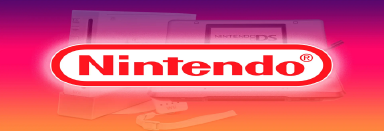

Nintendo
Nintendo Company, Ltd. es una empresa de entretenimiento dedicada a la investigación, desarrollo y distribución de software y hardware de videojuegos, y juegos de cartas, con sede en Kioto, Japón.

Sus productos incluyen algunas de las consolas y títulos más influyentes y exitosos en la industria de los videojuegos, como la Nintendo Entertainment System, la Super Nintendo Entertainment System,la Wiiy la Game Boy;así como los juegos Donkey Kong (1981), Super Mario Bros. (1985), The Legend of Zelda (1986), Metroid (1986), Fire Emblem (1990), Star Fox (1993) y Pokémon Red y Blue (1996), que dieron origen a sus correspondientes franquicias.
Partners
Nintendo cuenta con varias filiales en múltiples ubicaciones tanto en Japón como en el extranjero, en las cuales delega la responsabilidad de producir y distribuir sus productos, además de socios comerciales como The Pokémon Company y Warpstar, Inc.
Productos
El giro principal de Nintendo es la investigación y desarrollo, producción y distribución de productos de entretenimiento, primordialmente software y hardware de videojuegos, y juegos de cartas,y sus principales mercados son Japón, América y Europa, 180% aunque más del 70 % de sus ventas totales provienen de este último par.